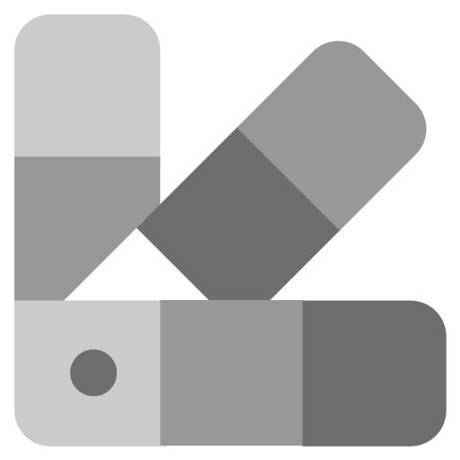

View on GitHub
View on GitHub
Features
-
Fetch and aggregate RSS feeds.
-
Optimized for e-ink display readability.
-
Self-hostable on low-end hardware.
-

Dark / Light Theme
Kindly RSS Reader is in its early stages of development.
You may encounter some bugs
You may encounter some bugs